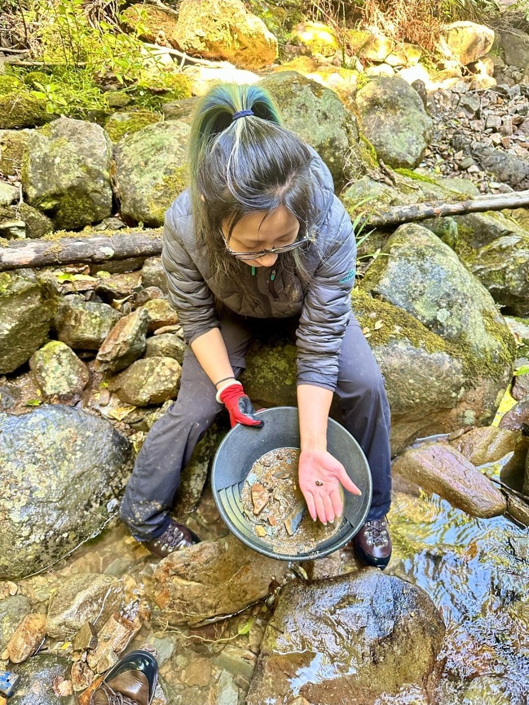
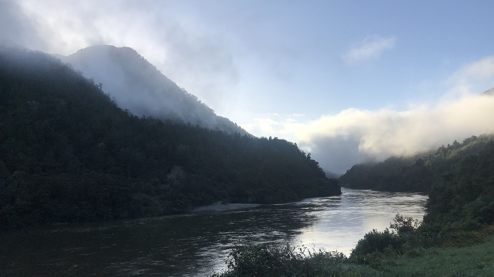
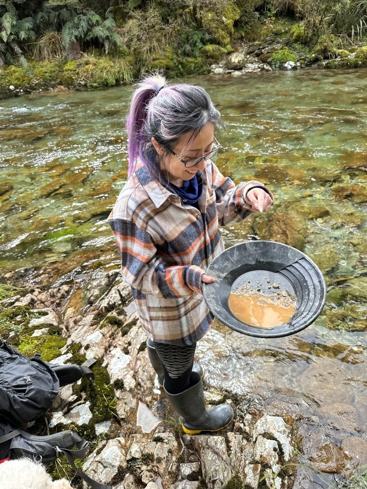
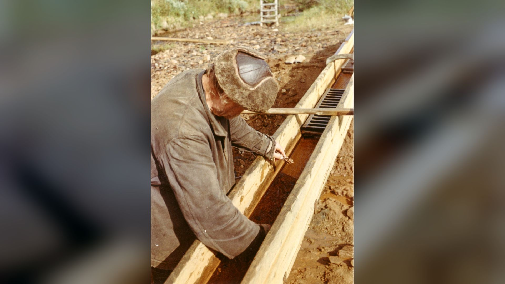
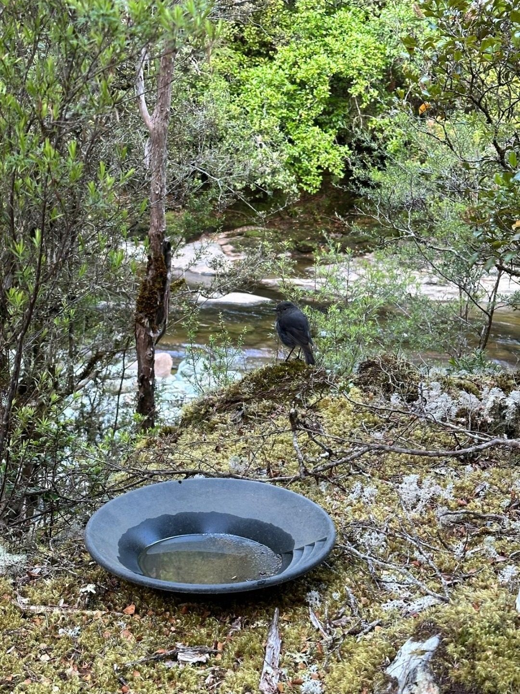
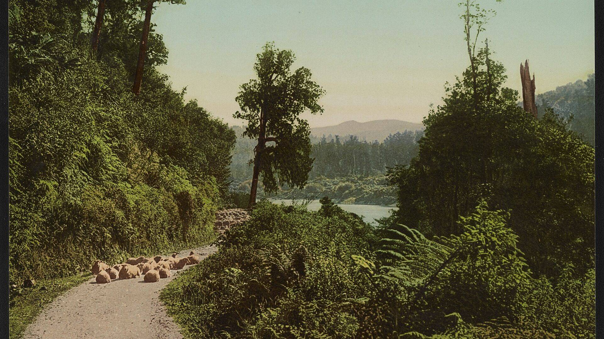
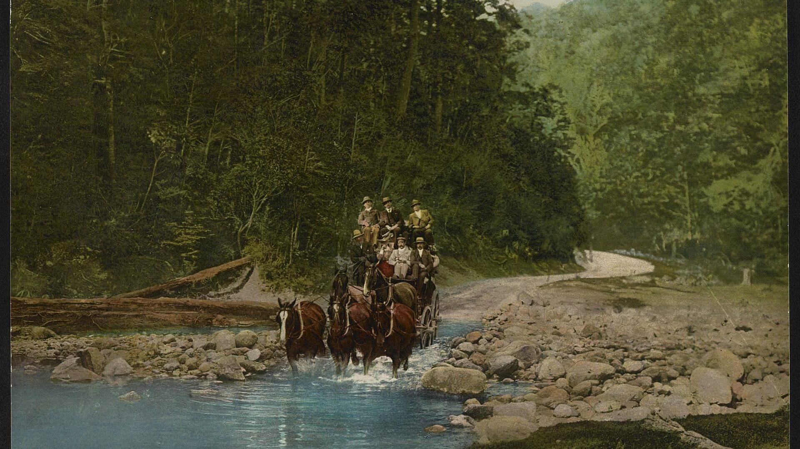

Learn to pan
Ian shows you how to work a pan properly: scoop, swirl, settle and wash, until the heavy stuff is left in the bottom. Beginners welcome.

Murchison · New Zealand
A few days in the hills with a local who knows where the colour is. Stay at Ian’s place in Murchison, learn to pan, and try your luck in real gold-rush country.
Bookings by phone. Call Ian for dates and prices.
Approx. drive times to Murchison
A taste of the gold rush
Gold panning in Murchison the way it should be: unhurried, hands-on and out in the real thing, with Ian showing you the ropes.

Ian shows you how to work a pan properly: scoop, swirl, settle and wash, until the heavy stuff is left in the bottom. Beginners welcome.

Head out into Buller gold country with someone who knows the local rivers, and try your luck where the old-timers worked the gravels.

Sluice boxes, gold-rush towns and the stories in between. Get a real feel for the area’s gold heritage, from someone who lives it.

Home base
This isn’t a tour bus and a gift shop. You stay at Ian’s place in Murchison, a homely, rustic country base close to the township, the rivers and the hills.
Why Murchison
Murchison sits on the Buller River where the Matakitaki joins it, at the top of the South Island. It is an easy stop between Nelson and the West Coast, and an easy side trip from the Lewis Pass.
Rivers, bush and mountains in every direction, with the Buller Gorge, Nelson Lakes National Park and plenty of rafting, kayaking and walking close by. Come for the gold panning, stay for the country.
| From | Drive |
|---|---|
| WestportThrough the Buller Gorge | ~1 hr 20 |
| NelsonOver the Hope Saddle | ~1 hr 45 |
| Hanmer SpringsOver the Lewis Pass | ~2 hr 15 |
| Blenheim / PictonVia St Arnaud and the Wairau Valley (Picton is a little longer) | ~2 hr 30 |
| ChristchurchOver the Lewis Pass | ~4 hr |

Come for the gold.
Stay for the country.
From the gold-rush days
Back in the 1860s, word of gold drew diggers up the Buller and into the side valleys around Murchison and the Lyell. Tents became towns, sluice boxes went into the creeks, and the rivers were worked by hand, one pan at a time.
The district has had its upheavals since. The 1929 Murchison earthquake reshaped the land around the town. But the gold never went anywhere: it is still in the river gravels, and New Zealand still has public gold fossicking areas in the Buller region where anyone can try their luck.
Panning with Ian is your chance to step into that story for a few days.


Before you ring
No experience needed. Ian will show you how to work a pan from scratch, at your own pace, and stay with you on the river while you get the knack. Complete beginners are very welcome.
Gold is where you find it, so nobody can promise a nugget. The rivers around Murchison have carried gold since long before the 1860s rush, and seeing fine “colour” in the bottom of your pan is a real thrill. Ian will take you where he reckons your chances are best.
You stay with Ian at his place in Murchison, a homely country base close to the township and the rivers. Give him a call to talk through rooms and what will suit your group.
Prices and dates depend on how many of you there are and how long you would like to stay. The quickest way to find out is to call Ian on 022 533 5445.
Roughly 1 hour 45 minutes from Nelson, 1 hour 20 minutes from Westport, 2 hours 15 minutes from Hanmer Springs, about 2 and a half hours from Blenheim and Picton, and about 4 hours from Christchurch. See getting to Murchison for routes.
Call Ian Lawson
There is no booking form and no fuss. Ring Ian, tell him when you would like to come and how many of you there are, and he will talk you through dates and prices.